En la nota anterior te comentamos algunas ventajas de tener una página web personal. También, resumimos en un esquema los 3 partes en las que se puede dividir el proceso. A continuación nos explayaremos en cada parte y construiremos la página web personal.
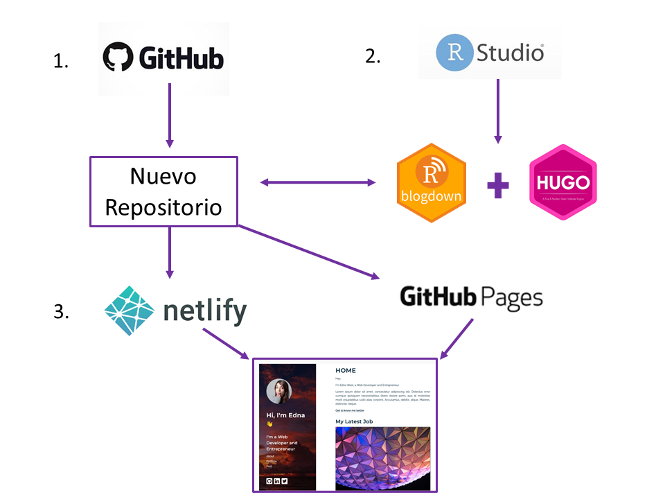
Comenzaremos con la creación de un repositorio en GitHub para luego crear un proyecto en RStudio con control de versiones. De esta manera podremos ir registrando todos cambios realizados para crear la página web. En esta parte, asumimos que tenés instalado Git y tenés una cuenta en GitHub. Si no es el caso, podés instalarte Git desde esta página y hacerte una cuenta en Github aquí. Si estás realizando tus primeros pasos en Git, en este nota encontrarás más información que te ayudará a incursionarte en Git.1
Vamos a comenzar creando un nuevo repositorio público en nuestra cuenta de GitHub, siguiendo los pasos que figuran a continuación.
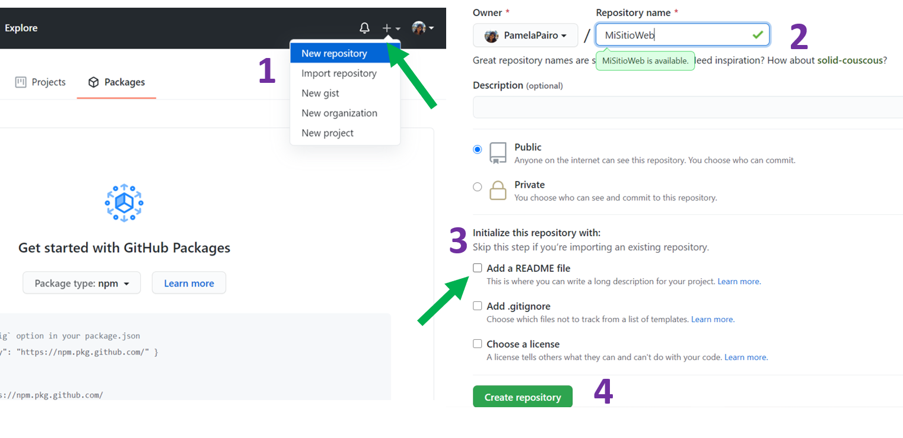
Para ello, no es necesario que el nombre del repositorio sea el nombre del dominio de la página web. Por último, copiamos el URL HTTPS de nuestro repositorio para clonarlo en RStudio.
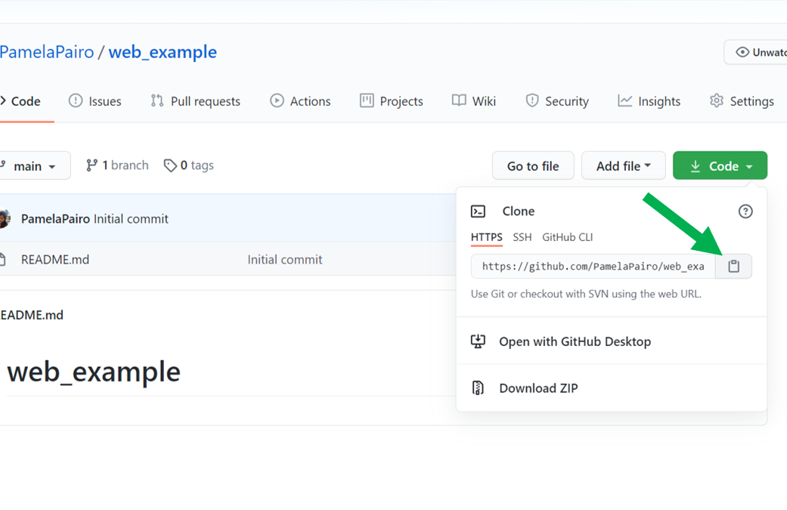
blogdown y Hugo. La configuración bilingüe.Continuamos creando un proyecto con control de versiones utilizando la URL HTTPS del repositorio creado. File > New Project > Version Control > Git.
En el proyecto ya creado, proseguimos con la descarga del paquete blogdown.
install.packages(blogdown)Una vez instalado blogdown, procedemos con la instalación de Hugo, de la siguiente manera:
blogdown::install_hugo()Hugo es el generador de sitios estáticos en el que se basa blogdown. En su página web se pueden encontrar una gran variedad de plantillas de sitios web. Por ejemplo, la plantilla academic tiene varias utilidades interesantes para páginas webs académicas.
Ahora vamos a instalar a modo de ejemplo la plantilla academic
library (blogdown)
blogdown::new_site(theme = "wowchemy/starter-academic", theme_example = TRUE)# en theme se debe colocar el nombre de la plantilla de hugo elegida Luego de esperar pocos minutos para la instalación de todas las carpetas y archivos que conforman la plantilla academic, obtendremos la primera versión de nuestro sitio web.
Si tenés instalada la última versión de blogdown, la plantilla se previsualizará de forma automática en el panel Viewer. En cambio, si tenés una versión anterior, entonces hay que ejecutar las siguiente linea de código para tener un visualización del sitio web localmente.
blogdown::serve_site()
blogdown::stop_server()# para dejar de visualizar el contenido generado
Veremos lo siguiente en Viewer ( o en un navegador):
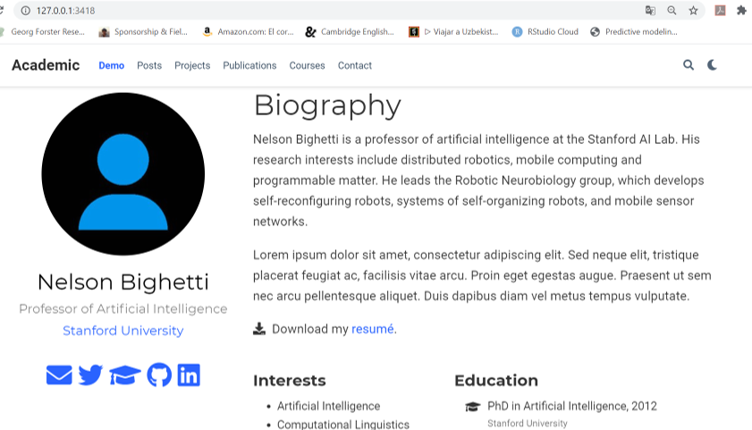
Ya tenemos nuestra página web, ahora lo que queda es reemplazar la información de la página por la nuestra y organizarla según nuestros intereses. A medida que modifiquemos cada archivo vamos a poder visualizar automáticamente los cambios en el Viewer y o en el navegador.
A continuación se muestra los principales archivos y carpetas que constituyen la página web.
├── config.toml
📁── config/default
├── menus.toml
├── params.toml
└── languages.toml
📂── content
📂── themesEn el archivo config.toml se encuentran los metadatos de nuestra página. Dentro de este archivo modificaremos el título de la página web y la URL.
Dentro de la carpeta _config/default se encuentran tres archivos.toml que definen la configuración de la página web.
params.toml: combinación de colores de la página (theme)2, tamaño de la letra (font_size). En este archivo también se agrega la información de contacto (email, dirección laboral, cuenta de twitter, GitHub, ResearchGate).
menus.toml: opciones del menú de navegación (Notas, Proyectos, Cursos, Publicaciones, etc). Podrás cambiar los nombres o quitar aquellas opciones que no querés que aparezcan.
languages.toml: se define el o los idiomas del sitio web.
En la carpeta content se localiza el contenido de nuesta página web en subcarpetas. Por ejemplo, si se quiere cambiar la información de la biografia, hay que seguir la siguiente ruta content > authors > admin y modificar el archivo index.md. Podremos cambiar la foto de la página reemplazando avatar.jpg por una foto nuestra.
📂── content
├── 📁authors
├── 📁courses
├── 📁home
├── 📁post
├── 📁project
└── 📂publicationDesde content/home se podrán activar y editar cada una de las opciones del menú de navegación (widgets) de la página web. Para que se visualice el widget, es necesario que aparezca active= true
Para configurar el sitio web en dos idiomas (español e inglés a modo de ejemplo) tenemos que crear dos subcarpetas llamadas en y es dentro de la carpeta content. Las nuevas subcarpetas deben tener cada una el contenido que había previamente en la carpeta content.3
📁── content
├── 📁- es <- Español
├── 📁- en <- Inglés
Luego, en el archivo languages.toml descomentar y agregar las siglas del segundo idioma e indicar la carpeta donde está su contenido.
[en]
languageCode = "en-us"
contentDir = "content/en" # Uncomment for multi-lingual sites, and move English content into `en` sub-folder.
title = "English site"
# Uncomment the lines below to configure your website in a second language.
[es]
languageCode = "es"
contentDir = "content/es"
title = "Sitio en español"
[es.params]
description = "Sitio en español"
[[es.menu.main]]
name = "es"
url = "#about"
weight = 1Además, se deben crear dos nuevos archivos menus.es.toml y menus.en.toml.
📁── config/default
├── menus.es.toml <- Español
├── menus.en.toml <- Inglés
├── params.toml
└── language.toml Finalmente en config.toml debemos elegir el idioma por defecto del sitio web. Por ejemplo si queremos que quede en español defaultContentLanguage = “es”
Para visibilizar que la página web es bilingüe, conviene ir a params.toml y verificar que en show_language diga TRUE.
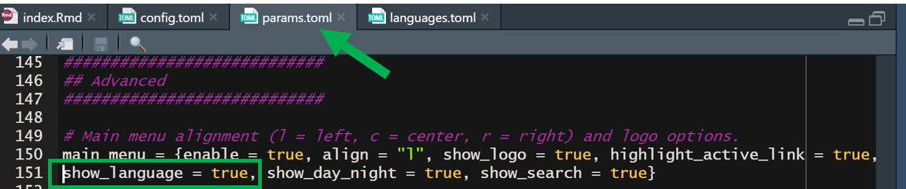
Una vez que la página web este editada de acuerdo a nuestros intereses, lo que resta es publicarla y compartirla al resto de la comunidad. Te indicamos dos opciones para ello que difieren en el servicio de host que utilizan. En ambos casos, son servicios gratuitos y permiten tener sitios estáticos. En el caso de Netlify, tu página web tendrá el siguiente dominio: nombreweb.netlify.app En el caso de Github Pages: nombreweb.github.io
Netlify y GitHub pages son servicios de host en la nube que nos permite tener un sitio estático de forma gratuita y sencilla. Basicamente, ambos se conecta con el repositorio remoto en GitHub para publicar el sitio en la web.
Primero debemos poner una copia del archivo netlify.toml localizado en theme > starter-academic en la carpeta base del proyecto. En dicho archivo debemos especificar la versión utilizada de Hugo.
blogdown::hugo_version()
[1] '0.78.1'El archivo netlify.toml corregido con la versión de Hugo debería quedar así:
[build.environment]
HUGO_VERSION = "0.78.1" #Aqui va el número de tu versión de Hugo
HUGO_ENABLEGITINFO = "true"
Además verificamos en el archivo config.toml esté especificado el theme utilizado. En nuestro caso es starter-academic.
theme = "starter-academic"
Ahora sí podemos publicar nuestra página web. Primero, debemos ingresar a la página de Netlify. Cliqueamos en Sign Up y luego en GitHub para conectar Netlify con GitHub.
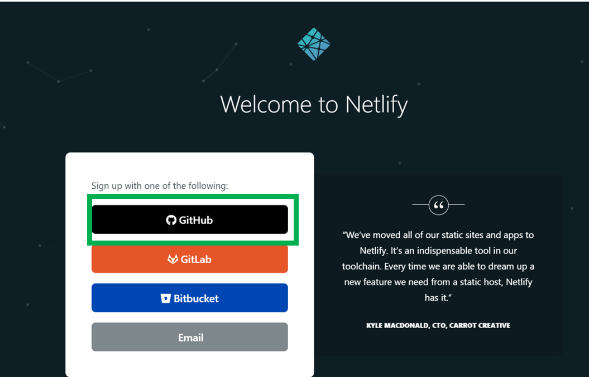
Luego, elegimos el repositorio remoto donde está la información de la página web mediante la siguiente ruta New site from Git > GitHub Obtendrás algo similar a la siguiente figura pero autocompletado con tu información.
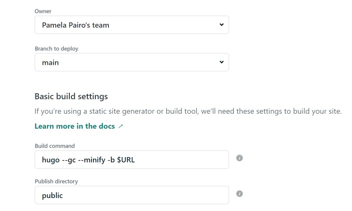
En opciones avanzadas (Show advanced) escribir la versión de Hugo que utilizaste para crear tu sitio web.
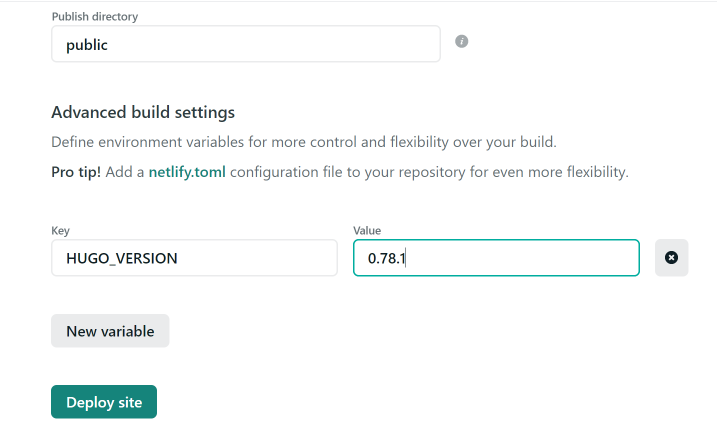
Cliqueamos en Deploy Site y ¡¡¡listo!!! 🥳 Notaremos que Netlify asigna aleatoriamente el nombre de la página web. Para cambiarlo tendremos que ir a Domain Settings > Options > Edit site name Podrás editar el contenido de tu página web sin la necesidad de repetir los pasos anteriores ya que Netlify al estar vinculado con GitHub lo actualizará automáticamente.
A diferencia de Netlify, este servidor es parte de Github, por lo que no necesitamos conectarnos a una nueva cuenta. Dentro del repositorio remoto debemos ir a Settings
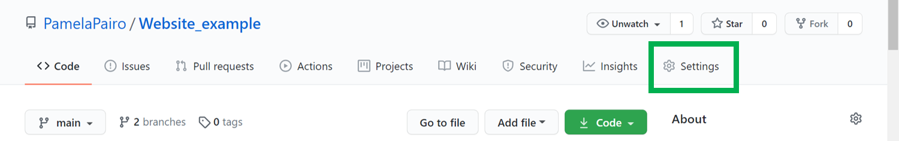
Luego, buscamos la sección de GitHub Pages y seleccionamos en la rama (Branch) donde se encuentra nuestro contenido web. Tener en cuenta que el dominio de nuestra página web será el nombre del repositorio, el cual puede ser cambiado después de haber sido creado.
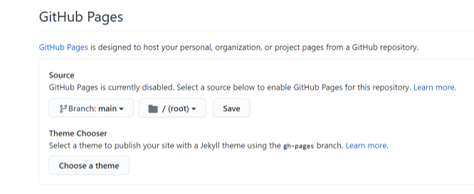
Para información más detallada te recomendamos visitar la página de GitHub Pages.
🔊 ¡Ahora solo queda que difundas tu sitio a la comunidad!
Para agregar una nueva nota dentro de la página web tenemos que ir a Addins y seleccionar New Post. Se abrirá una ventana donde podremos completar la información del título, les autores, etiquetas, fecha, categorias y seleccionar la ubicación de la nueva nota.
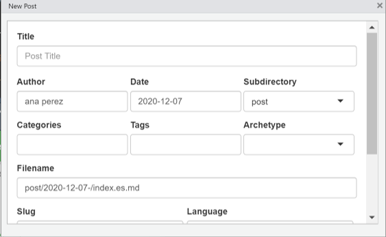
blogdownEn el caso de estar trabajando con la última versión de blogdown, recomendamos seguir los consejos provistos por Alison Hill en su presentación para L.A. R Users Group para configurar la versión de Hugo y buenas prácticas para la construcción de una página web.
blogdown: Creating Websites with R Markdown Yihui Xie, Amber Thomas, Alison Presmanes Hill
Up & Running with blogdown Alison Presmanes Hill
Blogging in R with Blogdown dictado por Rebecca Barter para RLadies- Bucarest
Becoming an R blogger Rebecca Barter
A Spoonful of Hugo: The netlify.toml File Alison Presmanes Hill
Para información mas detallada sobre el uso de Git te sugerimos consultar el libro de Jenny Bryan (en inglés), Happy Git and GitHub for UseR↩︎
Se pueden elegir otros themes aquí o si te animás podes crearte el tuyo↩︎
En el caso de que se elijan otros idiomas, las subcarpetas a crearse deben respetar las siglas según se muestra aquí↩︎